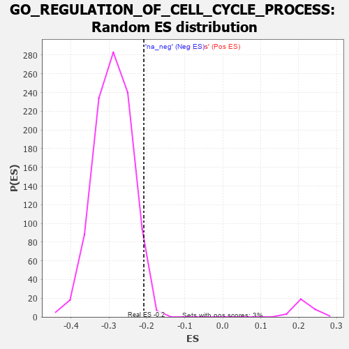

| | | Dataset | 7d |
| Phenotype | NoPhenotypeAvailable |
| Upregulated in class | na_neg |
| GeneSet | GO_REGULATION_OF_CELL_CYCLE_PROCESS |
| Enrichment Score (ES) | -0.20808491 |
| Normalized Enrichment Score (NES) | -0.7177634 |
| Nominal p-value | 0.97832817 |
| FDR q-value | 1.0 |
| FWER p-Value | 1.0 |
Table: GSEA Results Summary
 Fig 1: Enrichment plot: GO_REGULATION_OF_CELL_CYCLE_PROCESS
Fig 1: Enrichment plot: GO_REGULATION_OF_CELL_CYCLE_PROCESS
Profile of the Running ES Score & Positions of GeneSet Members on the Rank Ordered List
| PROBE | GENE SYMBOL | GENE_TITLE | RANK IN GENE LIST | RANK METRIC SCORE | RUNNING ES | CORE ENRICHMENT | | 1 | PCBP4 | | | 44 | 2.875 | 0.0209 | No |
| 2 | TEX14 | | | 164 | 1.179 | 0.0165 | No |
| 3 | BUB3 | | | 172 | 1.143 | 0.0261 | No |
| 4 | CDC45 | | | 239 | 0.950 | 0.0264 | No |
| 5 | INSM1 | | | 250 | 0.939 | 0.0338 | No |
| 6 | WEE2 | | | 333 | 0.766 | 0.0303 | No |
| 7 | CNOT7 | | | 348 | 0.750 | 0.0354 | No |
| 8 | HUS1 | | | 362 | 0.735 | 0.0406 | No |
| 9 | CLSPN | | | 379 | 0.719 | 0.0451 | No |
| 10 | AXIN2 | | | 383 | 0.713 | 0.0513 | No |
| 11 | BAX | | | 387 | 0.711 | 0.0575 | No |
| 12 | RRP8 | | | 403 | 0.699 | 0.0621 | No |
| 13 | NBN | | | 405 | 0.696 | 0.0684 | No |
| 14 | EED | | | 409 | 0.690 | 0.0744 | No |
| 15 | CNOT6 | | | 462 | 0.655 | 0.0737 | No |
| 16 | CDC20 | | | 480 | 0.644 | 0.0775 | No |
| 17 | CNOT2 | | | 514 | 0.625 | 0.0790 | No |
| 18 | KIF23 | | | 522 | 0.622 | 0.0838 | No |
| 19 | APEX1 | | | 577 | 0.604 | 0.0824 | No |
| 20 | CCNB1 | | | 581 | 0.601 | 0.0876 | No |
| 21 | RBL2 | | | 593 | 0.596 | 0.0917 | No |
| 22 | NDC80 | | | 616 | 0.590 | 0.0943 | No |
| 23 | AURKC | | | 633 | 0.583 | 0.0977 | No |
| 24 | PLRG1 | | | 644 | 0.579 | 0.1017 | No |
| 25 | MRE11 | | | 693 | 0.560 | 0.1007 | No |
| 26 | CDC6 | | | 709 | 0.557 | 0.1039 | No |
| 27 | RAD21 | | | 779 | 0.538 | 0.1000 | No |
| 28 | BLM | | | 804 | 0.531 | 0.1018 | No |
| 29 | RAE1 | | | 827 | 0.524 | 0.1038 | No |
| 30 | RFWD3 | | | 843 | 0.521 | 0.1067 | No |
| 31 | RPA2 | | | 851 | 0.519 | 0.1106 | No |
| 32 | HDAC8 | | | 881 | 0.510 | 0.1116 | No |
| 33 | STOX1 | | | 905 | 0.506 | 0.1133 | No |
| 34 | CCND2 | | | 949 | 0.496 | 0.1123 | No |
| 35 | MEN1 | | | 1003 | 0.483 | 0.1099 | No |
| 36 | PSMG2 | | | 1018 | 0.480 | 0.1126 | No |
| 37 | AKT1 | | | 1040 | 0.476 | 0.1143 | No |
| 38 | RCC1 | | | 1043 | 0.475 | 0.1184 | No |
| 39 | RAD51 | | | 1090 | 0.466 | 0.1168 | No |
| 40 | CDK10 | | | 1092 | 0.465 | 0.1209 | No |
| 41 | RINT1 | | | 1110 | 0.462 | 0.1230 | No |
| 42 | PSMD7 | | | 1152 | 0.454 | 0.1219 | No |
| 43 | ERCC3 | | | 1173 | 0.451 | 0.1235 | No |
| 44 | TFDP1 | | | 1180 | 0.450 | 0.1269 | No |
| 45 | PSMD2 | | | 1181 | 0.450 | 0.1311 | No |
| 46 | NEDD1 | | | 1186 | 0.449 | 0.1347 | No |
| 47 | RBBP7 | | | 1220 | 0.443 | 0.1345 | No |
| 48 | CDC73 | | | 1265 | 0.436 | 0.1329 | No |
| 49 | CNOT3 | | | 1274 | 0.435 | 0.1359 | No |
| 50 | CARM1 | | | 1413 | 0.408 | 0.1219 | No |
| 51 | RBX1 | | | 1445 | 0.401 | 0.1216 | No |
| 52 | DACH1 | | | 1471 | 0.395 | 0.1220 | No |
| 53 | E2F4 | | | 1501 | 0.390 | 0.1219 | No |
| 54 | SDE2 | | | 1579 | 0.378 | 0.1154 | No |
| 55 | CDC27 | | | 1585 | 0.377 | 0.1183 | No |
| 56 | PAF1 | | | 1588 | 0.376 | 0.1215 | No |
| 57 | CDK4 | | | 1626 | 0.370 | 0.1201 | No |
| 58 | DRG1 | | | 1633 | 0.368 | 0.1228 | No |
| 59 | DDB1 | | | 1642 | 0.366 | 0.1251 | No |
| 60 | ORC1 | | | 1661 | 0.363 | 0.1261 | No |
| 61 | TPX2 | | | 1708 | 0.355 | 0.1235 | No |
| 62 | ERCC2 | | | 1712 | 0.354 | 0.1264 | No |
| 63 | KMT2E | | | 1730 | 0.350 | 0.1274 | No |
| 64 | ESPL1 | | | 1734 | 0.349 | 0.1303 | No |
| 65 | MRNIP | | | 1743 | 0.346 | 0.1324 | No |
| 66 | WAPL | | | 1758 | 0.344 | 0.1338 | No |
| 67 | LRP5 | | | 1769 | 0.342 | 0.1357 | No |
| 68 | LSM10 | | | 1783 | 0.340 | 0.1371 | No |
| 69 | RAD17 | | | 1804 | 0.336 | 0.1377 | No |
| 70 | PSMD4 | | | 1811 | 0.335 | 0.1400 | No |
| 71 | UVRAG | | | 1831 | 0.332 | 0.1406 | No |
| 72 | PSMD6 | | | 1858 | 0.326 | 0.1403 | No |
| 73 | NUP62 | | | 1871 | 0.324 | 0.1417 | No |
| 74 | CUL3 | | | 1893 | 0.321 | 0.1420 | No |
| 75 | ZW10 | | | 1973 | 0.309 | 0.1346 | No |
| 76 | FOXO4 | | | 2004 | 0.304 | 0.1336 | No |
| 77 | CENPE | | | 2086 | 0.293 | 0.1258 | No |
| 78 | BMP7 | | | 2107 | 0.290 | 0.1259 | No |
| 79 | INO80 | | | 2120 | 0.288 | 0.1271 | No |
| 80 | JADE1 | | | 2141 | 0.286 | 0.1271 | No |
| 81 | PSME4 | | | 2143 | 0.285 | 0.1296 | No |
| 82 | DTL | | | 2154 | 0.284 | 0.1310 | No |
| 83 | CNOT4 | | | 2161 | 0.283 | 0.1328 | No |
| 84 | ATAD5 | | | 2197 | 0.277 | 0.1308 | No |
| 85 | CDK2 | | | 2226 | 0.272 | 0.1297 | No |
| 86 | PSMF1 | | | 2251 | 0.268 | 0.1291 | No |
| 87 | MED25 | | | 2320 | 0.257 | 0.1227 | No |
| 88 | MIF | | | 2357 | 0.252 | 0.1204 | No |
| 89 | SIN3A | | | 2361 | 0.251 | 0.1224 | No |
| 90 | MTA3 | | | 2443 | 0.237 | 0.1141 | No |
| 91 | FEN1 | | | 2446 | 0.237 | 0.1160 | No |
| 92 | KAT2B | | | 2502 | 0.226 | 0.1110 | No |
| 93 | CDT1 | | | 2505 | 0.226 | 0.1129 | No |
| 94 | RAD1 | | | 2528 | 0.223 | 0.1121 | No |
| 95 | PSMD5 | | | 2560 | 0.218 | 0.1101 | No |
| 96 | VPS4A | | | 2654 | 0.205 | 0.1000 | No |
| 97 | EPC1 | | | 2663 | 0.204 | 0.1008 | No |
| 98 | PHB2 | | | 2712 | 0.197 | 0.0965 | No |
| 99 | DCTN3 | | | 2731 | 0.193 | 0.0959 | No |
| 100 | CUL1 | | | 2735 | 0.193 | 0.0973 | No |
| 101 | TPRA1 | | | 2745 | 0.192 | 0.0980 | No |
| 102 | RIOK2 | | | 2775 | 0.187 | 0.0959 | No |
| 103 | BECN1 | | | 2828 | 0.179 | 0.0909 | No |
| 104 | DAPK3 | | | 2880 | 0.169 | 0.0859 | No |
| 105 | CDK13 | | | 2944 | 0.158 | 0.0792 | No |
| 106 | XPO1 | | | 2960 | 0.156 | 0.0787 | No |
| 107 | BRD7 | | | 3018 | 0.147 | 0.0727 | No |
| 108 | WNT4 | | | 3023 | 0.146 | 0.0736 | No |
| 109 | BRCA2 | | | 3024 | 0.146 | 0.0749 | No |
| 110 | YAF2 | | | 3032 | 0.145 | 0.0753 | No |
| 111 | BIRC6 | | | 3047 | 0.143 | 0.0749 | No |
| 112 | CUL4A | | | 3097 | 0.137 | 0.0698 | No |
| 113 | FOXN3 | | | 3159 | 0.129 | 0.0631 | No |
| 114 | PSMD9 | | | 3179 | 0.125 | 0.0618 | No |
| 115 | FZR1 | | | 3205 | 0.122 | 0.0597 | No |
| 116 | DDX3X | | | 3388 | 0.091 | 0.0371 | No |
| 117 | MED1 | | | 3405 | 0.089 | 0.0358 | No |
| 118 | CNOT1 | | | 3473 | 0.081 | 0.0280 | No |
| 119 | CDK5 | | | 3480 | 0.080 | 0.0279 | No |
| 120 | GLI1 | | | 3489 | 0.079 | 0.0276 | No |
| 121 | XPC | | | 3509 | 0.076 | 0.0259 | No |
| 122 | PIN1 | | | 3543 | 0.069 | 0.0223 | No |
| 123 | DMRT1 | | | 3546 | 0.068 | 0.0226 | No |
| 124 | LCMT1 | | | 3576 | 0.063 | 0.0195 | No |
| 125 | SKP1 | | | 3663 | 0.049 | 0.0088 | No |
| 126 | CDC16 | | | 3724 | 0.038 | 0.0014 | No |
| 127 | SPAST | | | 3801 | 0.027 | -0.0081 | No |
| 128 | SFI1 | | | 3810 | 0.026 | -0.0089 | No |
| 129 | PRC1 | | | 3841 | 0.021 | -0.0126 | No |
| 130 | NEK2 | | | 3871 | 0.016 | -0.0162 | No |
| 131 | NIPBL | | | 3900 | 0.010 | -0.0197 | No |
| 132 | SYF2 | | | 4008 | -0.009 | -0.0334 | No |
| 133 | MCPH1 | | | 4039 | -0.014 | -0.0372 | No |
| 134 | PKN2 | | | 4060 | -0.017 | -0.0396 | No |
| 135 | RPTOR | | | 4252 | -0.050 | -0.0637 | No |
| 136 | PCID2 | | | 4258 | -0.051 | -0.0639 | No |
| 137 | PSME3 | | | 4280 | -0.056 | -0.0661 | No |
| 138 | SETD2 | | | 4443 | -0.084 | -0.0862 | No |
| 139 | KIF3B | | | 4450 | -0.085 | -0.0862 | No |
| 140 | PINX1 | | | 4515 | -0.097 | -0.0936 | No |
| 141 | APC | | | 4558 | -0.107 | -0.0980 | No |
| 142 | CHMP3 | | | 4660 | -0.129 | -0.1099 | No |
| 143 | POC1A | | | 4768 | -0.151 | -0.1223 | No |
| 144 | TERT | | | 4801 | -0.157 | -0.1249 | No |
| 145 | CEP97 | | | 4812 | -0.160 | -0.1247 | No |
| 146 | FBXW7 | | | 4816 | -0.161 | -0.1236 | No |
| 147 | TAOK3 | | | 4823 | -0.162 | -0.1229 | No |
| 148 | TIPIN | | | 4839 | -0.166 | -0.1233 | No |
| 149 | CBX3 | | | 4923 | -0.183 | -0.1323 | No |
| 150 | ATRX | | | 4929 | -0.184 | -0.1313 | No |
| 151 | SUZ12 | | | 4931 | -0.185 | -0.1297 | No |
| 152 | EP300 | | | 4941 | -0.186 | -0.1291 | No |
| 153 | CHMP5 | | | 4952 | -0.188 | -0.1287 | No |
| 154 | PRKDC | | | 4955 | -0.189 | -0.1272 | No |
| 155 | KLF4 | | | 5005 | -0.198 | -0.1317 | No |
| 156 | DRD2 | | | 5088 | -0.221 | -0.1402 | No |
| 157 | DDX11 | | | 5102 | -0.225 | -0.1398 | No |
| 158 | FLCN | | | 5140 | -0.235 | -0.1424 | No |
| 159 | DCTN2 | | | 5175 | -0.243 | -0.1445 | No |
| 160 | NEK10 | | | 5180 | -0.244 | -0.1428 | No |
| 161 | ATM | | | 5210 | -0.249 | -0.1442 | No |
| 162 | GPSM2 | | | 5228 | -0.252 | -0.1441 | No |
| 163 | SND1 | | | 5244 | -0.256 | -0.1437 | No |
| 164 | PTEN | | | 5262 | -0.261 | -0.1435 | No |
| 165 | CDK1 | | | 5264 | -0.262 | -0.1412 | No |
| 166 | CEP70 | | | 5282 | -0.267 | -0.1409 | No |
| 167 | PLK4 | | | 5397 | -0.295 | -0.1529 | No |
| 168 | STIL | | | 5483 | -0.314 | -0.1609 | No |
| 169 | CEP76 | | | 5485 | -0.315 | -0.1581 | No |
| 170 | FGFR1 | | | 5543 | -0.332 | -0.1624 | No |
| 171 | SPHK1 | | | 5576 | -0.339 | -0.1634 | No |
| 172 | NDE1 | | | 5578 | -0.339 | -0.1604 | No |
| 173 | PSMD1 | | | 5674 | -0.367 | -0.1693 | No |
| 174 | CDC23 | | | 5756 | -0.394 | -0.1761 | No |
| 175 | BBS4 | | | 5806 | -0.407 | -0.1786 | No |
| 176 | RING1 | | | 5856 | -0.420 | -0.1811 | No |
| 177 | PCGF2 | | | 5943 | -0.451 | -0.1880 | No |
| 178 | DCTN1 | | | 5950 | -0.454 | -0.1846 | No |
| 179 | CXCR5 | | | 5954 | -0.456 | -0.1808 | No |
| 180 | CNTRL | | | 5961 | -0.459 | -0.1773 | No |
| 181 | SH2B1 | | | 5963 | -0.459 | -0.1732 | No |
| 182 | CENPJ | | | 5968 | -0.460 | -0.1694 | No |
| 183 | CKAP5 | | | 6032 | -0.482 | -0.1731 | No |
| 184 | CALR | | | 6077 | -0.499 | -0.1742 | No |
| 185 | PLK1 | | | 6082 | -0.500 | -0.1701 | No |
| 186 | TNKS | | | 6138 | -0.516 | -0.1724 | No |
| 187 | INSR | | | 6204 | -0.538 | -0.1758 | No |
| 188 | CDC42 | | | 6236 | -0.548 | -0.1747 | No |
| 189 | TFAP4 | | | 6254 | -0.556 | -0.1718 | No |
| 190 | SVIL | | | 6259 | -0.558 | -0.1671 | No |
| 191 | CEP41 | | | 6516 | -0.669 | -0.1940 | No |
| 192 | MIIP | | | 6554 | -0.686 | -0.1924 | No |
| 193 | ALMS1 | | | 6590 | -0.704 | -0.1904 | No |
| 194 | TPR | | | 6597 | -0.709 | -0.1846 | No |
| 195 | ANKK1 | | | 6603 | -0.713 | -0.1787 | No |
| 196 | OFD1 | | | 6692 | -0.758 | -0.1830 | No |
| 197 | EGFR | | | 6708 | -0.765 | -0.1779 | No |
| 198 | GIPC1 | | | 6819 | -0.826 | -0.1844 | No |
| 199 | CEP72 | | | 6846 | -0.839 | -0.1800 | No |
| 200 | NINL | | | 6869 | -0.851 | -0.1750 | No |
| 201 | RBBP4 | | | 7123 | -1.010 | -0.1983 | Yes |
| 202 | CETN2 | | | 7200 | -1.070 | -0.1982 | Yes |
| 203 | CDK9 | | | 7266 | -1.138 | -0.1961 | Yes |
| 204 | PARP3 | | | 7289 | -1.158 | -0.1882 | Yes |
| 205 | MSX2 | | | 7299 | -1.171 | -0.1785 | Yes |
| 206 | OVOL1 | | | 7341 | -1.214 | -0.1726 | Yes |
| 207 | FBXL7 | | | 7380 | -1.245 | -0.1660 | Yes |
| 208 | CASP2 | | | 7442 | -1.322 | -0.1616 | Yes |
| 209 | CEP78 | | | 7464 | -1.354 | -0.1518 | Yes |
| 210 | CALM1 | | | 7567 | -1.499 | -0.1511 | Yes |
| 211 | NEK11 | | | 7579 | -1.521 | -0.1384 | Yes |
| 212 | PKD1 | | | 7628 | -1.611 | -0.1297 | Yes |
| 213 | CSPP1 | | | 7632 | -1.623 | -0.1151 | Yes |
| 214 | TAF1 | | | 7643 | -1.633 | -0.1013 | Yes |
| 215 | MDM1 | | | 7691 | -1.742 | -0.0913 | Yes |
| 216 | PKD2 | | | 7822 | -2.167 | -0.0880 | Yes |
| 217 | CALM3 | | | 7869 | -2.525 | -0.0706 | Yes |
| 218 | PLCB1 | | | 7904 | -2.841 | -0.0487 | Yes |
| 219 | PSMD3 | | | 7907 | -2.887 | -0.0223 | Yes |
| 220 | PSMD8 | | | 7931 | -3.286 | 0.0052 | Yes |
Table: GSEA details [plain text format]

Fig 2: GO_REGULATION_OF_CELL_CYCLE_PROCESS: Random ES distribution
Gene set null distribution of ES for GO_REGULATION_OF_CELL_CYCLE_PROCESS